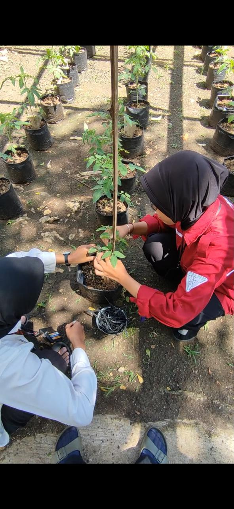
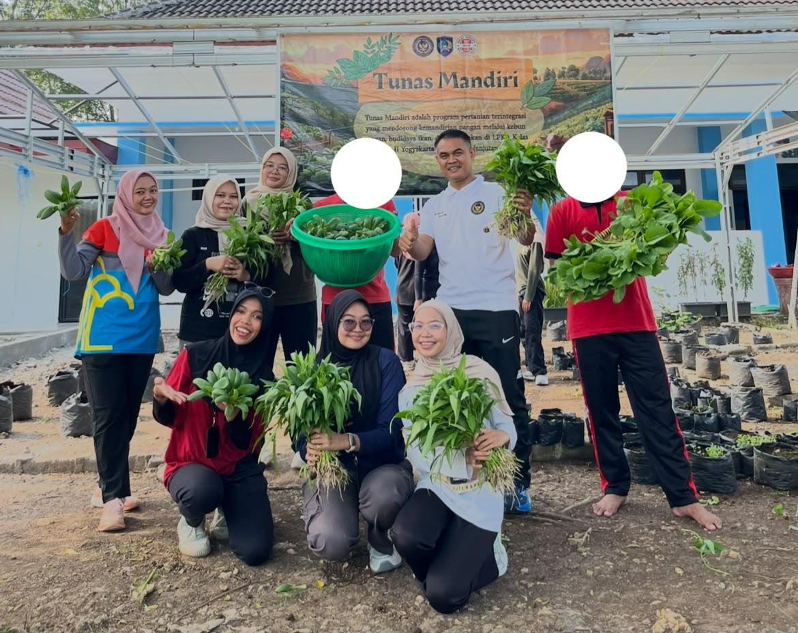

2025–2026
Lembaga Pembinaan Khusus Anak Kelas II Yogyakarta
Pembina Kemandirian Bidang Pertanian
Melalui program Maganghub Kementerian Ketenagakerjaan RI, saya terlibat dalam pelaksanaan kegiatan pembinaan kemandirian bidang pertanian.
Activities
- Mendampingi peserta dalam kegiatan budidaya tanaman.
- Memberikan pelatihan pertanian praktis.
- Mengoordinasikan program pertanian dan kegiatan lapangan.
- Menyiapkan materi edukasi dan dokumentasi.
- Memantau kegiatan budidaya.
- Mencatat dan mengelola data kegiatan.

